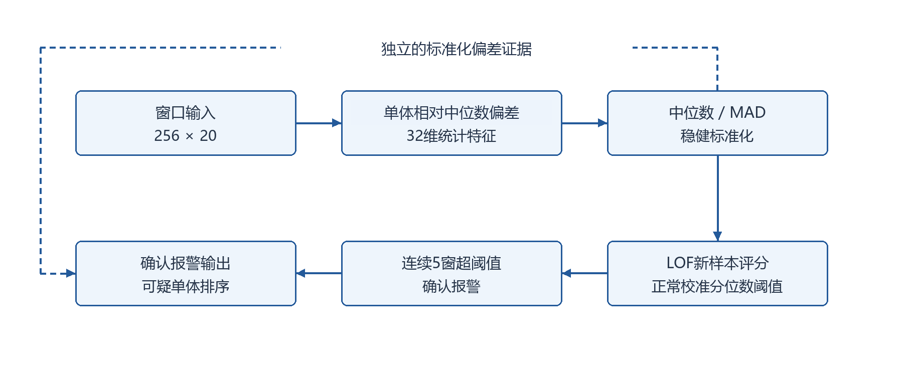

本作品源于一个跨学科的现实观察：电池储能运维与服务器系统监控看似属于材料／电气与计算机两个 相距甚远的学科，但在"用无监督方法发现多通道时序数据中的异常"这一环节上，它们面临的技术约束几乎完全重合。
在电池场景中，一个电池包内 8 个串联单体是可相互比较的同类通道，单体电压之间的相对偏离蕴含单体级故障线索； 在服务器场景中，一台机器的 38 个监控通道（CPU、内存、磁盘、网络等）是量纲互不相同的异构通道。 两者的共同点是：（i）真实故障标签稀缺乃至不存在，监督学习不可用； （ii）正常参考数据相对易得，可用于刻画"正常应该长什么样"； （iii）告警必须满足因果性——不能用未来数据判断当前点是否异常，否则无法在线部署； （iv）在生产中误报成本高昂，"连续几窗确认后才报警"比"单点超阈值即报警"更可接受。
因此，两个学科场景真正需要的并不是"又一个检测模型"，而是一套与具体物理量、具体领域解耦、 可被不同学科直接复用的检测流程与评估协议。这正是本作品的出发点。
在本作品开始整理前，团队原有的电池检测研究代码已经能够跑出结果，但其结构存在三处影响跨学科复用的断裂， 它们在跨领域迁移时逐一暴露：
| 断裂点 | 问题表现 | 对跨学科复用的影响 |
|---|---|---|
| 特征断裂 | 特征提取与"电压单体"这一具体物理量硬绑定，统计量、通道选取都写死在电池代码里。 | 换成服务器监控这类异构通道时无法直接使用，必须重写特征层，且容易把不同量纲的通道错误混合。 |
| 校准断裂 | 阈值、标准化参数来自同一个被观察的数据集，拟合、校准、评价边界不清，存在信息泄漏与事后调阈值的风险。 | 换领域后阈值失去意义；若沿用同一套阈值选择逻辑，会得到"看起来很好但不可复现"的结果。 |
| 评价断裂 | 评价采用逐点指标但常隐含 point adjustment——事件内命中一次就把整段补为检出，抬高指标。 | 不同学科、不同团队的结果无法横向比较，也无法判断迁移后到底是变好还是变差。 |
一个自然的直觉是：既然检测效果有限，就应该上更深的模型（如深度自编码器、LSTM 预测残差等）。本作品没有 走这条路，理由有三点，且都有本次实验的证据支撑：
据此，本作品的定位确定为：把既有方法组织成一条标准化的、可校准、可复现、可严格评价的流程， 并把这套流程封装为可独立安装的库。
跨学科复用的第一道关口是数据表示。本作品定义了一个与具体物理量无关的统一输入契约：
契约中刻意保留了两条"拒绝服务"的设计：其一，一个 predict 调用只能对应 同一设备的一段连续有序序列，库不检查时间戳，连续性须由调用方保证；其二，state 绑定设备与模型／校准版本，重新拟合或校准后旧状态会被拒绝，不能跨设备复用。这两条设计把"边界正确性"的责任 明确划给调用方，避免了跨学科场景中最常见的隐性错误。
在统一契约之上，本作品把检测组织为五个明确分离的阶段，每个阶段的职责与可见信息都被严格限定。 其中检测内核采用四种既有方法——鲁棒绝对偏差、LOF[1]、Isolation Forest[5] 与 PCA 重建残差；本作品不修改其算法本身，只统一其输入契约、校准方式与评价协议。整体范式属于 基于正常参考的 novelty detection[2]。
| 阶段 | 名称 | 职责与约束 |
|---|---|---|
| ① | 正常参考拟合 | 仅用业务确认的正常参考数据估计标准化参数（中位数中心 + 1.4826×MAD 尺度）与模型内部结构。 拟合侧按时间顺序均匀抽样，最多 6000 窗。 |
| ② | 独立校准 | 在与拟合段不重叠的独立正常校准段上计算分数分布，取 q99 作为阈值。 修正后阈值不随测试数据变化。 |
| ③ | 因果连续报警 | 严格 score > threshold；连续 5 窗超阈值才从第 5 窗起确认， 不回填前 4 窗。一窗未超阈值即解除。 |
| ④ | 通道证据排序 | 输出每个通道的标准化偏离量并排序，用于人工核验线索，不是模型分数的归因分解。 |
| ⑤ | 严格逐点评价 | 逐点指标不做 point adjustment；FPR 分母为实际正常点；事件延迟只统计已检出事件。 |
时序切分固定为按时间顺序的 60% 拟合 / 20% 校准 / 20% 验证，随机种子 seed 42。这五阶段的分工， 是本作品"方案可行性"的直接来源：任何一步出错都能被单独定位（第 4.3 节的尺度实验正是借这套分工才找到根因）。

跨学科复用最实际的困难在于"通道之间能不能比较"。本作品没有回避这一点，而是显式提供两种特征模式， 把选择权交给使用学科：
| 特征模式 | 每通道统计量 | 使用边界 |
|---|---|---|
| independent | 均值、标准差、极差、归一化时间轴上的线性斜率、差分标准差 | 不直接混合不同通道的物理量，适用于异构监控通道；仍需每通道正常参考标准化。 |
| peer | 相对通道中位数残差的均值、标准差、绝对残差 q95、残差差分标准差 | 要求至少 2 个物理可比较的同类通道，不能混合电压、温度、转速等不同单位。 |
这一区分直接对应两个学科场景：电池的 8 个串联单体电压彼此可比，用 peer， 其核心统计量是"某单体相对全部单体中位数的残差"；服务器的 38 个通道量纲各异，用 independent， 逐通道独立统计。正是这条适配层，使同一套代码得以在两类数据上运行，而不需要改写检测内核。
标准化一律采用中位数中心 + 1.4826×MAD 尺度，而非均值／标准差，理由来自对异常敏感的鲁棒统计实践[3]。 针对稀疏变化特征（大部分时间不变、偶有变化）可能出现的零 MAD退化，本作品建立了显式的回退规则： 当 MAD < 1e-7 且拟合侧标准差 ≥ 1e-7 时，回退到拟合侧标准差；否则按 MAD 处理并设 1e-7 下限。 该规则的定位是已定位工程缺陷的修正，不是原创算法（见 4.4 节第 4 条与第 8 条）。
在线检测的可用性取决于两点：不用未来信息，且不把评价信息回流到建模。本作品的处理是：
时序异常检测领域长期存在一个被广泛批评的评价惯例——point adjustment，即只要一个异常事件内有一个点被正确 命中，就把该事件内所有点都替换为命中。这会系统性地高估模型能力[4]。本作品明确拒绝该惯例：
这套协议是跨学科结果可比较的前提，也是本作品"方案可行性"得分的核心依据之一：任何人用同一套协议复跑， 都能得到可比对的数字。
本方案最重要的设计原则是克制——明确不承诺"跨领域自动迁移"，因为这种承诺在无监督异常检测中不可兑现。 换一个场景，本作品要求使用者显式提供：正常参考数据、明确的通道语义、合适的特征模式，并重新拟合与校准。 这不是缺陷，而是对本类问题数据本质的尊重。
为让流程真正可被他人复用，本作品没有停留在"研究脚本"，而是交付一个可独立安装的 Python 包： 发行名 chronoguard-ts，导入名 chronoguard，版本 0.1.0。 交付物为 wheel 与源码包（sdist）两种形态，均不含私有数据、下载数据、模型、逐点预测、Git 历史、缓存或日志。
"能在自己机器上跑"与"能被别人装起来跑"是两回事。本作品对后者做了专门验证：
| 验证项 | 结果 |
|---|---|
| 新库单元测试 | 34 项，覆盖变通道输入、有限值检查、原电池 peer 特征等价、 MAD 退化、拟合／校准分离、因果性、分块一致、设备边界、状态失效、模型加载、窗口对齐、严格评价。 |
| 原研究体系回归测试 | 86 项，检测流程的回归测试保留。 |
| 合计 | 120 项，0 失败。 |
| wheel 在仓库之外的干净虚拟环境安装 | 核对导入来源并跑通四种方法，导入成功。 |
| 源码包解压后独立安装 | 34 项测试通过（其中 1 项因依赖库内文件缺失而跳过而非失败）， 并成功运行示例。 |
关于那 1 项跳过：库内有一项 peer 等价测试需要加载原研究体系的 features.py 做逐值比对。 该文件只在完整源码仓库内存在，单独发布 framework/ 时对应测试会跳过而非失败—— 这是刻意的设计，保证发布的精简包不会因缺少内部文件而报错。
| 数据域 | 规模 | 协议要点 |
|---|---|---|
| 电池（正常留出） | 4 个正常包共 26508 窗 | 包 6/8/9/10 轮流留出，其余包各自按时间分段；peer 特征。 |
| 服务器 SMD | 3 台机器共 80873 个测试点 | machine-1-1 / -2-1 / -3-1 分别拟合／校准／测试；T=1、C=38、independent 特征。 |
| 实验总数：两类场景共 40 组 = 28 组原始（16 组电池 + 12 组 SMD）+ 12 组时序尺度对照（T=16）。所有组采用同一固定协议：q99 阈值、连续 5 窗确认、seed 42、最多 6000 拟合窗。 | ||
为让结果可被独立核对，本作品对源码、输入数据、模型、产物四类对象建立了完整的 SHA256 溯源： 本次共核对 49 个产物哈希与 12 个输入哈希，12 组 SMD 指标从保存的逐点预测重新计算并与汇总一致。 provenance.json 保存固定协议、版本与源码／输入 SHA256。 对第三方服务器数据，库在下载清单存在时会核对来源、三类文件清单项与 SHA256，不符或缺项即拒绝读取。
电池数据没有真实故障标签与可靠时间映射，因此本作品只能报告正常参考上的确认报警率， 不能计算真实故障召回率、F1、提前量或单体定位准确率。下表为全部留出窗口被视为正常参考时的确认报警窗口比例， 宏平均为四包比例的算术平均，不是按窗数加权。
| 方法 | 包6 | 包8 | 包9 | 包10 | 四包宏平均 |
|---|---|---|---|---|---|
| robust | 0.186% | 0.144% | 0.020% | 0.000% | 0.087% |
| lof | 0.866% | 18.453% | 0.098% | 8.238% | 6.914% |
| iforest | 0.000% | 0.000% | 0.020% | 0.000% | 0.005% |
| pca | 0.011% | 2.153% | 0.157% | 0.000% | 0.580% |
服务器数据有逐点标签，可计算严格逐点指标（不做 point adjustment）。所有逐点指标使用 confirmed；FPR = FP / (FP + TN)，分母为正常点；事件由连续阳性标签定义。
| 机器 | 方法 | Precision | Recall | 严格 F1 | 正常点 FPR | 事件检出/总数 |
|---|---|---|---|---|---|---|
| machine-1-1 | robust | 0.2534 | 0.9324 | 0.3984 | 28.710% | 7/8 |
| machine-1-1 | lof | 0.2807 | 0.7238 | 0.4046 | 19.376% | 7/8 |
| machine-1-1 | iforest | 0.5409 | 0.1522 | 0.2375 | 1.350% | 4/8 |
| machine-1-1 | pca | 0.1641 | 0.8296 | 0.2740 | 44.154% | 8/8 |
| machine-2-1 | robust | 1.0000 | 0.0547 | 0.1037 | 0.000% | 3/13 |
| machine-2-1 | lof | 0.7196 | 0.1667 | 0.2706 | 0.337% | 6/13 |
| machine-2-1 | iforest | 0.6000 | 0.0128 | 0.0251 | 0.044% | 2/13 |
| machine-2-1 | pca | 0.7381 | 0.0265 | 0.0512 | 0.049% | 3/13 |
| machine-3-1 | robust | 0.9524 | 0.1299 | 0.2286 | 0.007% | 1/4 |
| machine-3-1 | lof | 0.0199 | 0.5292 | 0.0384 | 28.219% | 4/4 |
| machine-3-1 | iforest | 0.0375 | 0.3604 | 0.0680 | 10.031% | 1/4 |
| machine-3-1 | pca | 1.0000 | 0.2662 | 0.4205 | 0.000% | 1/4 |
| 方法（三机宏平均） | 宏平均 Precision | 宏平均 Recall | 宏平均严格 F1 | 宏平均正常点 FPR |
|---|---|---|---|---|
| robust | 0.7352 | 0.3723 | 0.2436 | 9.573% |
| lof | 0.3401 | 0.4732 | 0.2379 | 15.977% |
| iforest | 0.3928 | 0.1751 | 0.1102 | 3.808% |
| pca | 0.6341 | 0.3741 | 0.2486 | 14.734% |
宏平均为同一固定方法在三台机器上各指标的算术平均；F1 列是三台 F1 的均值，不是从宏平均 Precision/Recall 再计算的 F1。本作品未挑选各机器测试最优方法拼接成绩，因为那是不可复现的做法。 machine-3-1 的 LOF 虽命中 4/4 个事件，FPR 却高达 28.219%、严格 F1 仅 0.0384——这说明"事件全命中" 不能独立作为高效能结论。

本节是本作品最具方法论价值的部分，也是"方案可行性"评分项的核心证据。它回答了一个跨学科复用中 至关重要的实际问题：把同一套流程迁移到另一个场景时，方法为什么会失效？
本作品设计了严格的对照实验：同一份数据、同一套代码、同一套协议（q99 / 连续 5 窗 / seed 42 / 最多 6000 拟合窗）， 唯一改变的是窗口长度 T（T=1 的逐点基线与 T=16 的开窗），从而把"时序尺度"这一变量的影响单独隔离出来。
| 方法 | T = 1 宏平均严格 F1 | T = 16 宏平均严格 F1 | 变化 |
|---|---|---|---|
| robust | 0.2436 | 0.2933 | +0.0497 |
| lof | 0.2379 | 0.1260 | −0.1119 |
| iforest | 0.1102 | 0.1703 | +0.0601 |
| pca | 0.2486 | 0.2463 | −0.0023 |

机理：距离对比度的塌缩。实验给出的特征空间诊断揭示了根因。在 machine-3-1 的校准集 800 点子样本上 计算特征空间点对距离的变异系数（CV）与 p95/p5 对比度：
| 尺度 | 有效特征维度 | 点对距离 CV | p95 / p5 对比度 |
|---|---|---|---|
| T = 1 | 30 | 3.455 | 65.8× |
| T = 16 | 150 | 0.404 | 3.1× |
随着窗口长度增大，有效特征维度从 30 升到 150，数据在特征空间中越来越"拥挤"， 点与点之间的相对距离差异被压缩（p95/p5 对比度从 65.8× 塌缩到 3.1×，CV 从 3.455 降到 0.404）。 此时 "邻居明显近于非邻居"这一前提不再成立，而 LOF 的局部可达密度恰恰建立在该前提之上[1]， 于是 LOF 的判别力被直接削弱；robust、PCA、Isolation Forest 不依赖邻居对比，未出现同等退化。 这解释了为什么上表中只有 LOF 出现了 −0.1119 的显著下降。
效应还因机器而异：machine-1-1 的 LOF 宏 F1 从 0.4046 降到 0.1577（召回塌陷）， machine-2-1 从 0.2706 降到 0.1645，而 machine-3-1 反而从 0.0384 微升到 0.0558。 说明尺度效应与具体数据的维度／冗余结构有关，不能简化为"T 越大越差"的单一结论。

这一实验的价值不限于解释 LOF：它给出了一条可迁移的复用诊断方法——在把流程迁移到新场景前， 先测量特征空间的成对距离对比度，即可预判哪种方法可能失效。这正是本作品把"评估流程"与"检测流程" 并列为核心交付的实证理由。
以下 8 条局限是本作品不可回避的边界。完整陈述它们，而非淡化，既是本作品一贯的风格，也是方案可行性的一部分。
本作品围绕"让异常检测流程能跨学科复用"这一目标，完成了三项具体工作：
同时，本作品对自身的边界做了诚实陈述：检测效果有限、电池侧缺少真实故障标签、"训练数据无故障"的前提未获证实、 尺度修正属开发复验、数据许可限制商业用途。本作品交付的是可运行、可复用、可检查的技术基础， 不代表已经满足全部生产条件，也不主张领先性能。
下一阶段的工作方向明确且可执行：
本作品使用的电池相关公开数据集为 “Lithium-Ion Battery Field Data: 28 LFP battery systems with 8 cells in series, up to 5 years of operation”，DOI: 10.5281/zenodo.13715694，许可 CC-BY-NC-4.0 （须署名，不得商用）。服务器监控数据来自 NetManAIOps/OmniAnomaly 的 ServerMachineDataset[6]，上游为 MIT 许可。 本作品不随交付分发任何数据、模型或逐点预测；库实现未复制第三方模型代码。